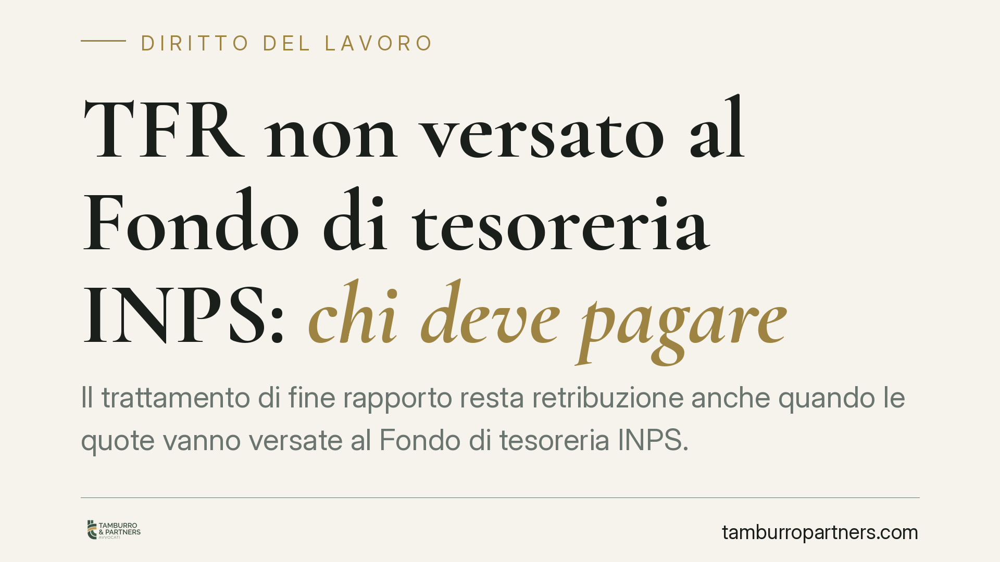

TFR non versato al Fondo di tesoreria INPS: chi deve pagare
Il trattamento di fine rapporto resta retribuzione anche quando le quote vanno versate al Fondo di tesoreria INPS. Una recente pronuncia delle Sezioni Unite è tornata sul punto: se il datore non versa, resta obbligato verso il lavoratore e, in caso di insolvenza, interviene il Fondo di garanzia. Vediamo cosa cambia in concreto per dipendenti e imprese.

Il caso e il principio
La questione riguarda i rapporti in cui il TFR non viene accantonato in azienda ma trasferito mensilmente a un fondo gestito dall'INPS, il cosiddetto Fondo di tesoreria. Quando il datore omette tali versamenti, chi risponde verso il lavoratore?
Su questo è intervenuta una recente pronuncia delle Sezioni Unite della Corte di Cassazione. Il numero e l'anno della sentenza sono in corso di verifica: invitiamo a non citare gli estremi senza riscontro sulla banca dati ufficiale. Il principio riferito è però coerente con l'impianto normativo: il TFR conserva natura retributiva anche per le quote destinate al Fondo di tesoreria. Di conseguenza il datore di lavoro resta l'obbligato principale nei confronti del dipendente, e il mancato versamento all'INPS non lo libera.
Inquadramento normativo
Il TFR è disciplinato dall'art. 2120 c.c., che lo configura come retribuzione differita: una parte del compenso maturata anno per anno e corrisposta alla cessazione del rapporto. Questa qualificazione è il perno di tutto il ragionamento, perché orienta le tutele applicabili.
Il Fondo di tesoreria è stato istituito dalla L. 296/2006 (art. 1, commi 755 e seguenti): le imprese con almeno 50 addetti versano all'INPS le quote di TFR non destinate a forme di previdenza complementare. La soglia non va letta come un dato fisso sul numero di teste presenti in un dato giorno: il parametro è la media occupazionale annua dei lavoratori, da calcolare secondo i criteri della disciplina attuativa. È un punto spesso frainteso e conviene verificarlo caso per caso.
Accanto al Fondo di tesoreria opera il Fondo di garanzia previsto dalla L. 297/1982: interviene quando il datore è insolvente, assicurando al lavoratore il pagamento del TFR non corrisposto.
Due fondi, due funzioni diverse
È essenziale non confondere i due strumenti.
- Il Fondo di tesoreria gestisce le quote correnti: raccoglie i versamenti mensili delle imprese sopra soglia ed eroga il TFR al momento della cessazione, per la parte di sua competenza.
- Il Fondo di garanzia è uno strumento di tutela contro l'insolvenza: entra in gioco quando il datore non è in grado di pagare, tipicamente in presenza di procedure concorsuali.
La qualificazione retributiva del TFR è ciò che consente di attivare la tutela del Fondo di garanzia anche per le quote che avrebbero dovuto transitare dal Fondo di tesoreria. In altri termini, l'omissione del datore non deve ricadere sul lavoratore.
Implicazioni pratiche
Per il lavoratore, il messaggio è che l'obbligato resta il datore: il mancato versamento all'INPS non è un problema da risolvere con l'Istituto, ma un inadempimento contrattuale azionabile. In caso di crisi d'impresa resta aperta la strada del Fondo di garanzia.
Per il datore, l'omissione dei versamenti al Fondo di tesoreria non estingue il debito verso il dipendente e può esporre a responsabilità ulteriori. La corretta gestione degli adempimenti contributivi incide direttamente sul rischio economico dell'azienda.
Cosa fare in concreto
Per il lavoratore:
- Verifica in busta paga e nel prospetto di fine rapporto quale quota di TFR è maturata e quanto risulta effettivamente corrisposto.
- Agisci entro i termini: il diritto al TFR si prescrive in cinque anni (art. 2948, n. 5, c.c.) dalla cessazione del rapporto. Non lasciare decorrere il termine.
- Valuta il Fondo di garanzia se il datore è insolvente o sottoposto a procedura concorsuale, raccogliendo la documentazione del rapporto.
Per il datore:
- Controlla la soglia dei 50 addetti calcolata sulla media occupazionale annua, per sapere se e da quando scatta l'obbligo di versamento al Fondo di tesoreria.
- Regolarizza gli arretrati tempestivamente: il debito verso il lavoratore resta dovuto a prescindere dal rapporto con l'INPS.
In presenza di contestazioni o di procedure concorsuali in corso, consigliamo di far esaminare la posizione da un professionista, perché i termini e le modalità di attivazione delle tutele variano in base alla situazione concreta.
Disclaimer
Contributo informativo a cura di Tamburro & Partners - Avv. Giuseppe Tamburro. Non costituisce parere legale.
Ogni storia di lavoro ha i suoi tempi.
Se gestisci HR e vuoi un confronto su contenzioso, ispezioni o licenziamenti, scrivi allo studio. Ti rispondiamo entro un giorno lavorativo.